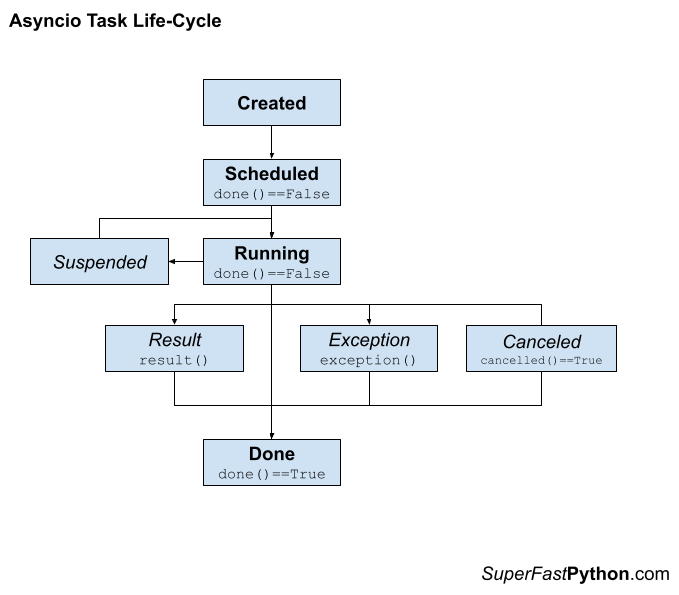

Python Asyncio: The Complete Guide
Python Asyncio provides asynchronous programming with coroutines.
Asynchronous programming is a popular programming paradigm that allows a large number of lightweight tasks to run concurrently with very little memory overhead, compared to threads.
This makes asyncio very attractive and widely used for Python web development, Python APIs that make web calls, and concurrency for socket programming.
This book-length guide provides a detailed and comprehensive walkthrough of Python Asyncio.
Some tips:
- You may want to bookmark this guide and read it over a few sittings.
- You can download a zip of all code used in this guide.
- You can get help, ask a question in the comments or email me.
- You can jump to the topics that interest you via the table of contents (below).
Let's dive in.
What is Asynchronous Programming
Asynchronous programming is a programming paradigm that does not block.
Instead, requests and function calls are issued and executed somehow in the background at some future time. This frees the caller to perform other activities and handle the results of issued calls at a later time when results are available or when the caller is interested.
Let's get a handle on asynchronous programming before we dive into asyncio.
Asynchronous Tasks
Asynchronous means not at the same time, as opposed to synchronous or at the same time.
asynchronous: not simultaneous or concurrent in time
-- Merriam-Webster Dictionary
When programming, asynchronous means that the action is requested, although not performed at the time of the request. It is performed later.
Asynchronous: Separate execution streams that can run concurrently in any order relative to each other are asynchronous.
-- Page 265, The Art of Concurrency, 2009.
For example, we can make an asynchronous function call.
This will issue the request to make the function call and will not wait around for the call to complete. We can choose to check on the status or result of the function call later.
- Asynchronous Function Call: Request that a function is called at some time and in some manner, allowing the caller to resume and perform other activities.
The function call will happen somehow and at some time, in the background, and the program can perform other tasks or respond to other events.
This is key. We don't have control over how or when the request is handled, only that we would like it handled while the program does other things.
Issuing an asynchronous function call often results in some handle on the request that the caller can use to check on the status of the call or get results. This is often called a future.
- Future: A handle on an asynchronous function call allowing the status of the call to be checked and results to be retrieved.
The combination of the asynchronous function call and future together is often referred to as an asynchronous task. This is because it is more elaborate than a function call, such as allowing the request to be canceled and more.
- Asynchronous Task: Used to refer to the aggregate of an asynchronous function call and resulting future.
Asynchronous Programming
Issuing asynchronous tasks and making asynchronous function calls is referred to as asynchronous programming.
So what is asynchronous programming? It means that a particular long-running task can be run in the background separate from the main application. Instead of blocking all other application code waiting for that long-running task to be completed, the system is free to do other work that is not dependent on that task. Then, once the long-running task is completed, we'll be notified that it is done so we can process the result.
-- Page 3, Python Concurrency with asyncio, 2022.
- Asynchronous Programming: The use of asynchronous techniques, such as issuing asynchronous tasks or function calls.
Asynchronous programming is primarily used with non-blocking I/O, such as reading and writing from socket connections with other processes or other systems.
In non-blocking mode, when we write bytes to a socket, we can just fire and forget the write or read, and our application can go on to perform other tasks.
-- Page 18, Python Concurrency with asyncio, 2022.
Non-blocking I/O is a way of performing I/O where reads and writes are requested, although performed asynchronously. The caller does not need to wait for the operation to complete before returning.
The read and write operations are performed somehow (e.g. by the underlying operating system or systems built upon it), and the status of the action and/or data is retrieved by the caller later, once available, or when the caller is ready.
- Non-blocking I/O: Performing I/O operations via asynchronous requests and responses, rather than waiting for operations to complete.
As such, we can see how non-blocking I/O is related to asynchronous programming. In fact, we use non-blocking I/O via asynchronous programming, or non-blocking I/O is implemented via asynchronous programming.
The combination of non-blocking I/O with asynchronous programming is so common that it is commonly referred to by the shorthand of asynchronous I/O.
- Asynchronous I/O: A shorthand that refers to combining asynchronous programming with non-blocking I/O.
Next, let's consider asynchronous programming support in Python.
Asynchronous Programming in Python
Broadly, asynchronous programming in Python refers to making requests and not blocking to wait for them to complete.
We can implement asynchronous programming in Python in various ways, although a few are most relevant for Python concurrency.
The first and obvious example is the asyncio module. This module directly offers an asynchronous programming environment using the async/await syntax and non-blocking I/O with sockets and subprocesses.
asyncio is short for asynchronous I/O. It is a Python library that allows us to run code using an asynchronous programming model. This lets us handle multiple I/O operations at once, while still allowing our application to remain responsive.
-- Page 3, Python Concurrency with asyncio, 2022.
It is implemented using coroutines that run in an event loop that itself runs in a single thread.
- Asyncio: An asynchronous programming environment provided in Python via the asyncio module.
More broadly, Python offers threads and processes that can execute tasks asynchronously.
For example, one thread can start a second thread to execute a function call and resume other activities. The operating system will schedule and execute the second thread at some time and the first thread may or may not check on the status of the task, manually.
Threads are asynchronous, meaning that they may run at different speeds, and any thread can halt for an unpredictable duration at any time.
-- Page 76, The Art of Multiprocessor Programming, 2020.
More concretely, Python provides executor-based thread pools and process pools in the ThreadPoolExecutor and ProcessPoolExeuctor classes.
These classes use the same interface and support asynchronous tasks via the submit() method that returns a Future object.
The concurrent.futures module provides a high-level interface for asynchronously executing callables. The asynchronous execution can be performed with threads, using ThreadPoolExecutor, or separate processes, using ProcessPoolExecutor.
-- concurrent.futures — Launching parallel tasks
The multiprocessing module also provides pools of workers using processes and threads in the Pool and ThreadPool classes, forerunners to the ThreadPoolExecutor and ProcessPoolExeuctor classes.
The capabilities of these classes are described in terms of worker execution tasks asynchronously. They explicitly provide synchronous (blocking) and asynchronous (non-blocking) versions of each method for executing tasks.
For example, one may issue a one-off function call synchronously via the apply() method or asynchronously via the apply_async() method.
A process pool object which controls a pool of worker processes to which jobs can be submitted. It supports asynchronous results with timeouts and callbacks and has a parallel map implementation.
-- multiprocessing — Process-based parallelism
There are other aspects of asynchronous programming in Python that are less strictly related to Python concurrency.
For example, Python processes receive or handle signals asynchronously. Signals are fundamentally asynchronous events sent from other processes.
This is primarily supported by the signal module.
Now that we know about asynchronous programming, let's take a closer look at asyncio.
What is Asyncio
Broadly, asyncio refers to the ability to implement asynchronous programming in Python using coroutines.
Specifically, it refers to two elements:
- The addition of the "asyncio" module to the Python standard library in Python 3.4.
- The addition of async/await expressions to the Python language in Python 3.5.
Together, the module and changes to the language facilitate the development of Python programs that support coroutine-based concurrency, non-blocking I/O, and asynchronous programming.
Python 3.4 introduced the asyncio library, and Python 3.5 produced the async and await keywords to use it palatably. These new additions allow so-called asynchronous programming.
-- Page vii, Using Asyncio in Python, 2020.
Let's take a closer look at these two aspects of asyncio, starting with the changes to the language.
Changes to Python to add Support for Coroutines
The Python language was changed to accommodate asyncio with the addition of expressions and types.
More specifically, it was changed to support coroutines as first-class concepts. In turn, coroutines are the unit of concurrency used in asyncio programs.
A coroutine is a function that can be suspended and resumed.
coroutine: Coroutines are a more generalized form of subroutines. Subroutines are entered at one point and exited at another point. Coroutines can be entered, exited, and resumed at many different points.
-- Python Glossary
A coroutine can be defined via the "async def" expression. It can take arguments and return a value, just like a function.
For example:
# define a coroutine
async def custom_coro():
# ...
Calling a coroutine function will create a coroutine object, this is a new class. It does not execute the coroutine function.
...
# create a coroutine object
coro = custom_coro()A coroutine can execute another coroutine via the await expression.
This suspends the caller and schedules the target for execution.
...
# suspend and schedule the target
await custom_coro()An asynchronous iterator is an iterator that yields awaitables.
asynchronous iterator: An object that implements the __aiter__() and __anext__() methods. __anext__ must return an awaitable object. async for resolves the awaitables returned by an asynchronous iterator's __anext__() method until it raises a StopAsyncIteration exception.
-- Python Glossary
An asynchronous iterator can be traversed using the "async for" expression.
...
# traverse an asynchronous iterator
async for item in async_iterator:
print(item)
This does not execute the for-loop in parallel.
Instead, the calling coroutine that executes the for loop will suspend and internally await each awaitable yielded from the iterator.
An asynchronous context manager is a context manager that can await the enter and exit methods.
An asynchronous context manager is a context manager that is able to suspend execution in its enter and exit methods.
-- Asynchronous Context Managers and "async with"
The "async with" expression is for creating and using asynchronous context managers.
The calling coroutine will suspend and await the context manager before entering the block for the context manager, and similarly when leaving the context manager block.
These are the sum of the major changes to Python language to support coroutines.
Next, let's look at the asyncio module.
The asyncio Module
The "asyncio" module provides functions and objects for developing coroutine-based programs using the asynchronous programming paradigm.
Specifically, it supports non-blocking I/O with subprocesses (for executing commands) and with streams (for TCP socket programming).
asyncio is a library to write concurrent code using the async/await syntax.
-- asyncio — Asynchronous I/O
Central to the asyncio module is the event loop.
This is the mechanism that runs a coroutine-based program and implements cooperative multitasking between coroutines.
The event loop is the core of every asyncio application. Event loops run asynchronous tasks and callbacks, perform network IO operations, and run subprocesses.
-- Asyncio Event Loop
The module provides both a high-level and low-level API.
The high-level API is for us Python application developers. The low-level API is for framework developers, not us, in most cases.
Most use cases are satisfied using the high-level API that provides utilities for working with coroutines, streams, synchronization primitives, subprocesses, and queues for sharing data between coroutines.
The lower-level API provides the foundation for the high-level API and includes the internals of the event loop, transport protocols, policies, and more.
... there are low-level APIs for library and framework developers
-- asyncio — Asynchronous I/O
Now that we know what asyncio is, broadly, and that it is for Asynchronous programming.
Next, let's explore when we should consider using asyncio in our Python programs.
When to Use Asyncio
Asyncio, broadly, is new, popular, much discussed, and exciting.
Nevertheless, there is a lot of confusion over when it should be adopted in a project.
When should we use asyncio in Python?
Reasons to Use Asyncio in Python
There are perhaps 3 top-level reasons to use asyncio in a Python project.
They are:
- Use asyncio in order to adopt coroutines in your program.
- Use asyncio in order to use the asynchronous programming paradigm.
- Use asyncio in order to use non-blocking I/O.
Reason 1: To Use Coroutines
We may choose to use asyncio because we want to use coroutines.
We may want to use coroutines because we can have many more concurrent coroutines in our program than concurrent threads.
Coroutines are another unit of concurrency, like threads and processes.
Thread-based concurrency is provided by the threading module and is supported by the underlying operating system. It is suited to blocking I/O tasks such reading and writing from files, sockets, and devices.
Process-based concurrency is provided by the multiprocessing module and is also supported by the underlying operating system, like threads. It is suited to CPU-bound tasks that do not require much inter-process communication, such as compute tasks.
Coroutines are an alternative that is provided by the Python language and runtime (standard interpreter) and further supported by the asyncio module. They are suited to non-blocking I/O with subprocesses and sockets, however, blocking I/O and CPU-bound tasks can be used in a simulated non-blocking manner using threads and processes under the covers.
This last point is subtle and key. Although we can choose to use coroutines for the capability for which they were introduced into Python, non-blocking, we may in fact use them with any tasks. Any program written with threads or processes can be rewritten or instead written using coroutines if we so desire.
Threads and processes achieve multitasking via the operating system that chooses which threads and processes should run, when, and for how long. The operating switches between threads and processes rapidly, suspending those that are not running and resuming those granted time to run. This is called preemptive multitasking.
Coroutines in Python provide an alternative type of multitasking called cooperating multitasking.
A coroutine is a subroutine (function) that can be suspended and resumed. It is suspended by the await expression and resumed once the await expression is resolved.
This allows coroutines to cooperate by design, choosing how and when to suspend their execution.
It is an alternate, interesting, and powerful approach to concurrency, different from thread-based and process-based concurrency.
This alone may make it a reason to adopt it for a project.
Another key aspect of coroutines is that they are lightweight.
They are more lightweight than threads. This means they are faster to start and use less memory. Essentially a coroutine is a special type of function, whereas a thread is represented by a Python object and is associated with a thread in the operating system with which the object must interact.
As such, we may have thousands of threads in a Python program, but we could easily have tens or hundreds of thousands of coroutines all in one thread.
We may choose coroutines for their scalability.
Reason 2: To Use Asynchronous Programming
We may choose to use asyncio because we want to use asynchronous programming in our program.
That is, we want to develop a Python program that uses the asynchronous programming paradigm.
Asynchronous means not at the same time, as opposed to synchronous or at the same time.
When programming, asynchronous means that the action is requested, although not performed at the time of the request. It is performed later.
Asynchronous programming often means going all in and designing the program around the concept of asynchronous function calls and tasks.
Although there are other ways to achieve elements of asynchronous programming, full asynchronous programming in Python requires the use of coroutines and the asyncio module.
It is a Python library that allows us to run code using an asynchronous programming model.
-- Page 3, Python Concurrency with asyncio, 2022.
We may choose to use asyncio because we want to use the asynchronous programming module in our program, and that is a defensible reason.
To be crystal clear, this reason is independent of using non-blocking I/O. Asynchronous programming can be used independently of non-blocking I/O.
As we saw previously, coroutines can execute non-blocking I/O asynchronously, but the asyncio module also provides the facility for executing blocking I/O and CPU-bound tasks in an asynchronous manner, simulating non-blocking under the covers via threads and processes.
Reason 3: To Use Non-Blocking I/O
We may choose to use asyncio because we want or require non-blocking I/O in our program.
Input/Output or I/O for short means reading or writing from a resource.
Common examples include:
- Hard disk drives: Reading, writing, appending, renaming, deleting, etc. files.
- Peripherals: mouse, keyboard, screen, printer, serial, camera, etc.
- Internet: Downloading and uploading files, getting a webpage, querying RSS, etc.
- Database: Select, update, delete, etc. SQL queries.
- Email: Send mail, receive mail, query inbox, etc.
These operations are slow, compared to calculating things with the CPU.
The common way these operations are implemented in programs is to make the read or write request and then wait for the data to be sent or received.
As such, these operations are commonly referred to as blocking I/O tasks.
The operating system can see that the calling thread is blocked and will context switch to another thread that will make use of the CPU.
This means that the blocking call does not slow down the entire system. But it does halt or block the thread or program making the blocking call.
You can learn more about blocking calls in the tutorial:
Non-blocking I/O is an alternative to blocking I/O.
It requires support in the underlying operating system, just like blocking I/O, and all modern operating systems provide support for some form of non-blocking I/O.
Non-blocking I/O allows read and write calls to be made as asynchronous requests.
The operating system will handle the request and notify the calling program when the results are available.
- Non-blocking I/O: Performing I/O operations via asynchronous requests and responses, rather than waiting for operations to complete.
As such, we can see how non-blocking I/O is related to asynchronous programming. In fact, we use non-blocking I/O via asynchronous programming, or non-blocking I/O is implemented via asynchronous programming.
The combination of non-blocking I/O with asynchronous programming is so common that it is commonly referred to by the shorthand of asynchronous I/O.
- Asynchronous I/O: A shorthand that refers to combining asynchronous programming with non-blocking I/O.
The asyncio module in Python was added specifically to add support for non-blocking I/O with subprocesses (e.g. executing commands on the operating system) and with streams (e.g. TCP socket programming) to the Python standard library.
We could simulate non-blocking I/O using threads and the asynchronous programming capability provided by Python thread pools or thread pool executors.
The asyncio module provides first-class asynchronous programming for non-blocking I/O via coroutines, event loops, and objects to represent non-blocking subprocesses and streams.
We may choose to use asyncio because we want to use asynchronous I/O in our program, and that is a defensible reason.
Other Reasons to Use Asyncio
Ideally, we would choose a reason that is defended in the context of the requirements of the project.
Sometimes we have control over the function and non-functional requirements and other times not. In the cases we do, we may choose to use asyncio for one of the reasons listed above. In the cases we don't, we may be led to choose asyncio in order to deliver a program that solves a specific problem.
Some other reasons we may use asyncio include:
- Use asyncio because someone else made the decision for you.
- Use asyncio because the project you have joined is already using it.
- Use asyncio because you want to learn more about it.
We don't always have full control over the projects we work on.
It is common to start a new job, new role, or new project and be told by the line manager or lead architect of specific design and technology decisions.
Using asyncio may be one of these decisions.
We may use asyncio on a project because the project is already using it. You must use asyncio, rather than you choose to use asyncio.
A related example might be the case of a solution to a problem that uses asyncio that you wish to adopt.
For example:
- Perhaps you need to use a third-party API and the code examples use asyncio.
- Perhaps you need to integrate an existing open-source solution that uses asyncio.
- Perhaps you stumble across some code snippets that do what you need, yet they use asyncio.
For lack of alternate solutions, asyncio may be thrust upon you by your choice of solution.
Finally, we may choose asyncio for our Python project to learn more about.
You may scoff, "what about the requirements?"
You may choose to adopt asyncio just because you want to try it out and it can be a defensible reason.
Using asyncio in a project will make its workings concrete for you.
When to Not Use Asyncio
We have spent a lot of time on reasons why we should use asyncio.
It is probably a good idea to spend at least a moment on why we should not use it.
One reason to not use asyncio is that you cannot defend its use using one of the reasons above.
This is not foolproof. There may be other reasons to use it, not listed above.
But, if you pick a reason to use asyncio and the reason feels thin or full of holes for your specific case. Perhaps asyncio is not the right solution.
I think the major reason to not use asyncio is that it does not deliver the benefit that you think it does.
There are many misconceptions about Python concurrency, especially around asyncio.
For example:
- Asyncio will work around the global interpreter lock.
- Asyncio is faster than threads.
- Asyncio avoids the need for mutex locks and other synchronization primitives.
- Asyncio is easier to use than threads.
These are all false.
Only a single coroutine can run at a time by design, they cooperate to execute. This is just like threads under the GIL. In fact, the GIL is an orthogonal concern and probably irrelevant in most cases when using asyncio.
Any program you can write with asyncio, you can write with threads and it will probably be as fast or faster. It will also probably be simpler and easier to read and interpret by fellow developers.
Any concurrency failure mode you might expect with threads, you can encounter with coroutines. You must make coroutines safe from deadlocks and race conditions, just like threads.
Another reason to not use asyncio is that you don't like asynchronous programming.
Asynchronous programming has been popular for some time now in a number of different programming communities, most notably the JavaScript community.
It is different from procedural, object-oriented, and functional programming, and some developers just don't like it.
No problem. If you don't like it, don't use it. It's a fair reason.
You can achieve the same effect in many ways, notably by sprinkling a few asynchronous calls in via thread or process executors as needed.
Now that we are familiar with when to use asyncio, let's look at coroutines in more detail.
Coroutines in Python
Python provides first-class coroutines with a "coroutine" type and new expressions like "async def" and "await".
It provides the "asyncio" module for running coroutines and developing asynchronous programs.
In this section, we will take a much closer look at coroutines.
What is a Coroutine
A coroutine is a function that can be suspended and resumed.
It is often defined as a generalized subroutine.
A subroutine can be executed, starting at one point and finishing at another point. Whereas, a coroutine can be executed then suspended, and resumed many times before finally terminating.
Specifically, coroutines have control over when exactly they suspend their execution.
This may involve the use of a specific expression, such as an "await" expression in Python, like a yield expression in a Python generator.
A coroutine is a method that can be paused when we have a potentially long-running task and then resumed when that task is finished. In Python version 3.5, the language implemented first-class support for coroutines and asynchronous programming when the keywords async and await were explicitly added to the language.
-- Page 3, Python Concurrency with asyncio, 2022.
A coroutine may suspend for many reasons, such as executing another coroutine, e.g. awaiting another task, or waiting for some external resources, such as a socket connection or process to return data.
Coroutines are used for concurrency.
Coroutines let you have a very large number of seemingly simultaneous functions in your Python programs.
-- Page 267, Effective Python, 2019.
Many coroutines can be created and executed at the same time. They have control over when they will suspend and resume, allowing them to cooperate as to when concurrent tasks are executed.
This is called cooperative multitasking and is different from the multitasking typically used with threads called preemptive multitasking tasking.
... in order to run multiple applications concurrently, processes voluntarily yield control periodically or when idle or logically blocked. This type of multitasking is called cooperative because all programs must cooperate for the scheduling scheme to work.
-- Cooperative multitasking, Wikipedia
Preemptive multitasking involves the operating system choosing what threads to suspend and resume and when to do so, as opposed to the tasks themselves deciding in the case of cooperative multitasking.
Now that we have some idea of what a coroutine is, let's deepen this understanding by comparing them to other familiar programming constructs.
Coroutine vs Routine and Subroutine
A “routine” and “subroutine” often refer to the same thing in modern programming.
Perhaps more correctly, a routine is a program, whereas a subroutine is a function in the program.
A routine has subroutines.
It is a discrete module of expressions that is assigned a name, may take arguments and may return a value.
- Subroutine: A module of instructions that can be executed on demand, typically named, and may take arguments and return a value. also called a function
A subroutine is executed, runs through the expressions, and returns somehow. Typically, a subroutine is called by another subroutine.
A coroutine is an extension of a subroutine. This means that a subroutine is a special type of a coroutine.
A coroutine is like a subroutine in many ways, such as:
- They both are discrete named modules of expressions.
- They both can take arguments, or not.
- They both can return a value, or not.
The main difference is that it chooses to suspend and resume its execution many times before returning and exiting.
Both coroutines and subroutines can call other examples of themselves. A subroutine can call other subroutines. A coroutine executes other coroutines. However, a coroutine can also execute other subroutines.
When a coroutine executes another coroutine, it must suspend its execution and allow the other coroutine to resume once the other coroutine has completed.
This is like a subroutine calling another subroutine. The difference is the suspension of the coroutine may allow any number of other coroutines to run as well.
This makes a coroutine calling another coroutine more powerful than a subroutine calling another subroutine. It is central to the cooperating multitasking facilitated by coroutines.
Coroutine vs Generator
A generator is a special function that can suspend its execution.
generator: A function which returns a generator iterator. It looks like a normal function except that it contains yield expressions for producing a series of values usable in a for-loop or that can be retrieved one at a time with the next() function.
-- Python Glossary
A generator function can be defined like a normal function although it uses a yield expression at the point it will suspend its execution and return a value.
A generator function will return a generator iterator object that can be traversed, such as via a for-loop. Each time the generator is executed, it runs from the last point it was suspended to the next yield statement.
generator iterator: An object created by a generator function. Each yield temporarily suspends processing, remembering the location execution state (including local variables and pending try-statements). When the generator iterator resumes, it picks up where it left off (in contrast to functions which start fresh on every invocation).
-- Python Glossary
A coroutine can suspend or yield to another coroutine using an "await" expression. It will then resume from this point once the awaited coroutine has been completed.
Using this paradigm, an await statement is similar in function to a yield statement; the execution of the current function gets paused while other code is run. Once the await or yield resolves with data, the function is resumed.
-- Page 218, High Performance Python, 2020.
We might think of a generator as a special type of coroutine and cooperative multitasking used in loops.
Generators, also known as semicoroutines, are a subset of coroutines.
-- Coroutine, Wikipedia.
Before coroutines were developed, generators were extended so that they might be used like coroutines in Python programs.
This required a lot of technical knowledge of generators and the development of custom task schedulers.
To implement your own concurrency using generators, you first need a fundamental insight concerning generator functions and the yield statement. Specifically, the fundamental behavior of yield is that it causes a generator to suspend its execution. By suspending execution, it is possible to write a scheduler that treats generators as a kind of “task” and alternates their execution using a kind of cooperative task switching.
-- Page 524, Python Cookbook, 2013.
This was made possible via changes to the generators and the introduction of the "yield from" expression.
These were later deprecated in favor of the modern async/await expressions.
Coroutine vs Task
A subroutine and a coroutine may represent a "task" in a program.
However, in Python, there is a specific object called an asyncio.Task object.
A Future-like object that runs a Python coroutine. [...] Tasks are used to run coroutines in event loops.
-- Asyncio Task Object
A coroutine can be wrapped in an asyncio.Task object and executed independently, as opposed to being executed directly within a coroutine. The Task object provides a handle on the asynchronously execute coroutine.
- Task: A wrapped coroutine that can be executed independently.
This allows the wrapped coroutine to execute in the background. The calling coroutine can continue executing instructions rather than awaiting another coroutine.
A Task cannot exist on its own, it must wrap a coroutine.
Therefore a Task is a coroutine, but a coroutine is not a task.
You can learn more about asyncio.Task objects in the tutorial:
Coroutine vs Thread
A coroutine is more lightweight than a thread.
- Thread: heavyweight compared to a coroutine
- Coroutine: lightweight compared to a thread.
A coroutine is defined as a function.
A thread is an object created and managed by the underlying operating system and represented in Python as a threading.Thread object.
- Thread: Managed by the operating system, represented by a Python object.
This means that coroutines are typically faster to create and start executing and take up less memory. Conversely, threads are slower than coroutines to create and start and take up more memory.
The cost of starting a coroutine is a function call. Once a coroutine is active, it uses less than 1 KB of memory until it's exhausted.
-- Page 267, Effective Python, 2019.
Coroutines execute within one thread, therefore a single thread may execute many coroutines.
Many separate async functions advanced in lockstep all seem to run simultaneously, mimicking the concurrent behavior of Python threads. However, coroutines do this without the memory overhead, startup and context switching costs, or complex locking and synchronization code that's required for threads.
-- Page 267, Effective Python, 2019.
You can learn more about threads in the guide:
Coroutine vs Process
A coroutine is more lightweight than a process.
In fact, a thread is more lightweight than a process.
A process is a computer program. It may have one or many threads.
A Python process is in fact a separate instance of the Python interpreter.
Processes, like threads, are created and managed by the underlying operating system and are represented by a multiprocessing.Process object.
- Process: Managed by the operating system, represented by a Python object.
This means that coroutines are significantly faster than a process to create and start and take up much less memory.
A coroutine is just a special function, whereas a Process is an instance of the interpreter that has at least one thread.
You can learn more about Python processes in the guide:
When Were Coroutines Added to Python
Coroutines extend generators in Python.
Generators have slowly been migrating towards becoming first-class coroutines for a long time.
We can explore some of the major changes to Python to add coroutines, which we might consider a subset of the probability addition of asyncio.
New methods like send() and close() were added to generator objects to allow them to act more like coroutines.
These were added in Python 2.5 and described in PEP 342.
This PEP proposes some enhancements to the API and syntax of generators, to make them usable as simple coroutines.
-- PEP 342 – Coroutines via Enhanced Generators
Later, allowing generators to emit a suspension exception as well as a stop exception described in PEP 334.
This PEP proposes a limited approach to coroutines based on an extension to the iterator protocol. Currently, an iterator may raise a StopIteration exception to indicate that it is done producing values. This proposal adds another exception to this protocol, SuspendIteration, which indicates that the given iterator may have more values to produce, but is unable to do so at this time.
-- PEP 334 – Simple Coroutines via SuspendIteration
The vast majority of the capabilities for working with modern coroutines in Python via the asyncio module were described in PEP 3156, added in Python 3.3.
This is a proposal for asynchronous I/O in Python 3, starting at Python 3.3. Consider this the concrete proposal that is missing from PEP 3153. The proposal includes a pluggable event loop, transport and protocol abstractions similar to those in Twisted, and a higher-level scheduler based on yield from (PEP 380). The proposed package name is asyncio.
-- PEP 3156 – Asynchronous IO Support Rebooted: the “asyncio” Module
A second approach to coroutines, based on generators, was added to Python 3.4 as an extension to Python generators.
A coroutine was defined as a function that used the @asyncio.coroutine decorator.
Coroutines were executed using an asyncio event loop, via the asyncio module.
A coroutine could suspend and execute another coroutine via the "yield from" expression
For example:
# define a custom coroutine in Python 3.4
@asyncio.coroutine
def custom_coro():
# suspend and execute another coroutine
yield from asyncio.sleep(1)
The "yield from" expression was defined in PEP 380.
A syntax is proposed for a generator to delegate part of its operations to another generator. This allows a section of code containing ‘yield’ to be factored out and placed in another generator.
-- PEP 380 – Syntax for Delegating to a Subgenerator
The "yield from" expression is still available for use in generators, although is a deprecated approach to suspending execution in coroutines, in favor of the "await" expression.
Note: Support for generator-based coroutines is deprecated and is removed in Python 3.11. Generator-based coroutines predate async/await syntax. They are Python generators that use yield from expressions to await on Futures and other coroutines.
-- Asyncio Coroutines and Tasks
We might say that coroutines were added as first-class objects to Python in version 3.5.
This included changes to the Python language, such as the "async def", "await", "async with", and "async for" expressions, as well as a coroutine type.
These changes were described in PEP 492.
It is proposed to make coroutines a proper standalone concept in Python, and introduce new supporting syntax. The ultimate goal is to help establish a common, easily approachable, mental model of asynchronous programming in Python and make it as close to synchronous programming as possible.
-- PEP 492 – Coroutines with async and await syntax
Now that we know what a coroutine is, let's take a closer look at how to use them in Python.
Define, Create and Run Coroutines
We can define coroutines in our Python programs, just like defining new subroutines (functions).
Once defined, a coroutine function can be used to create a coroutine object.
The "asyncio" module provides tools to run our coroutine objects in an event loop, which is a runtime for coroutines.
How to Define a Coroutine
A coroutine can be defined via the "async def" expression.
This is an extension of the "def" expression for defining subroutines.
It defines a coroutine that can be created and returns a coroutine object.
For example:
# define a coroutine
async def custom_coro():
# ...
A coroutine defined with the "async def" expression is referred to as a "coroutine function".
coroutine function: A function which returns a coroutine object. A coroutine function may be defined with the async def statement, and may contain await, async for, and async with keywords.
-- Python Glossary
A coroutine can then use coroutine-specific expressions within it, such as await, async for, and async with.
Execution of Python coroutines can be suspended and resumed at many points (see coroutine). await expressions, async for and async with can only be used in the body of a coroutine function.
-- Coroutine function definition
For example:
# define a coroutine
async def custom_coro():
# await another coroutine
await asyncio.sleep(1)
How to Create a Coroutine
Once a coroutine is defined, it can be created.
This looks like calling a subroutine.
For example:
...
# create a coroutine
coro = custom_coro()This does not execute the coroutine.
It returns a "coroutine" object.
You can think of a coroutine function as a factory for coroutine objects; more directly, remember that calling a coroutine function does not cause any user-written code to execute, but rather just builds and returns a coroutine object.
-- Page 516, Python in a Nutshell, 2017.
A "coroutine" Python object has methods, such as send() and close(). It is a type.
We can demonstrate this by creating an instance of a coroutine and calling the type() built-in function in order to report its type.
For example:
# SuperFastPython.com
# check the type of a coroutine
# define a coroutine
async def custom_coro():
# await another coroutine
await asyncio.sleep(1)
# create the coroutine
coro = custom_coro()
# check the type of the coroutine
print(type(coro))
Running the example reports that the created coroutine is a "coroutine" class.
We also get a RuntimeError because the coroutine was created but never executed, we will explore that in the next section.
<class 'coroutine'>
sys:1: RuntimeWarning: coroutine 'custom_coro' was never awaited
A coroutine object is an awaitable.
This means it is a Python type that implements the __await__() method.
An awaitable object generally implements an __await__() method. Coroutine objects returned from async def functions are awaitable.
-- Awaitable Objects
You can learn more about awaitables in the tutorial:
How to Run a Coroutine From Python
Coroutines can be defined and created, but they can only be executed within an event loop.
The event loop is the core of every asyncio application. Event loops run asynchronous tasks and callbacks, perform network IO operations, and run subprocesses.
-- Asyncio Event Loop
The event loop that executes coroutines, manages the cooperative multitasking between coroutines.
Coroutine objects can only run when the event loop is running.
-- Page 517, Python in a Nutshell, 2017.
The typical way to start a coroutine event loop is via the asyncio.run() function.
This function takes one coroutine and returns the value of the coroutine. The provided coroutine can be used as the entry point into the coroutine-based program.
For example:
# SuperFastPython.com
# example of running a coroutine
import asyncio
# define a coroutine
async def custom_coro():
# await another coroutine
await asyncio.sleep(1)
# main coroutine
async def main():
# execute my custom coroutine
await custom_coro()
# start the coroutine program
asyncio.run(main())
Now that we know how to define, create, and run a coroutine, let's take a moment to understand the event loop.
What is the Event Loop
The heart of asyncio programs is the event loop.
In this section, we will take a moment to look at the asyncio event loop.
What is the Asyncio Event Loop
The event loop is an environment for executing coroutines in a single thread.
asyncio is a library to execute these coroutines in an asynchronous fashion using a concurrency model known as a single-threaded event loop.
-- Page 3, Python Concurrency with asyncio, 2022.
The event loop is the core of an asyncio program.
It does many things, such as:
- Execute coroutines.
- Execute callbacks.
- Perform network input/output.
- Run subprocesses.
The event loop is the core of every asyncio application. Event loops run asynchronous tasks and callbacks, perform network IO operations, and run subprocesses.
-- Asyncio Event Loop
Event loops are a common design pattern and became very popular in recent times given their use in JavaScript.
JavaScript has a runtime model based on an event loop, which is responsible for executing the code, collecting and processing events, and executing queued sub-tasks. This model is quite different from models in other languages like C and Java.
-- The event loop, Mozilla.
The event loop, as its name suggests, is a loop. It manages a list of tasks (coroutines) and attempts to progress each in sequence in each iteration of the loop, as well as perform other tasks like executing callbacks and handling I/O.
The "asyncio" module provides functions for accessing and interacting with the event loop.
This is not required for typical application development.
Instead, access to the event loop is provided for framework developers, those that want to build on top of the asyncio module or enable asyncio for their library.
Application developers should typically use the high-level asyncio functions, such as asyncio.run(), and should rarely need to reference the loop object or call its methods.
-- Asyncio Event Loop
The asyncio module provides a low-level API for getting access to the current event loop object, as well as a suite of methods that can be used to interact with the event loop.
The low-level API is intended for framework developers that will extend, complement and integrate asyncio into third-party libraries.
We rarely need to interact with the event loop in asyncio programs, in favor of using the high-level API instead.
Nevertheless, we can briefly explore how to get the event loop.
How To Start and Get An Event Loop
The typical way we create an event loop in asyncio applications is via the asyncio.run() function.
This function always creates a new event loop and closes it at the end. It should be used as a main entry point for asyncio programs, and should ideally only be called once.
-- Asyncio Coroutines and Tasks
The function takes a coroutine and will execute it to completion.
We typically pass it to our main coroutine and run our program from there.
There are low-level functions for creating and accessing the event loop.
The asyncio.new_event_loop() function will create a new event loop and return access to it.
Create and return a new event loop object.
-- Asyncio Event Loop
For example:
...
# create and access a new asyncio event loop
loop = asyncio.new_event_loop()We can demonstrate this with a worked example.
In the example below we will create a new event loop and then report its details.
# SuperFastPython.com
# example of creating an event loop
import asyncio
# create and access a new asyncio event loop
loop = asyncio.new_event_loop()
# report defaults of the loop
print(loop)
Running the example creates the event loop, then reports the details of the object.
We can see that in this case the event loop has the type _UnixSelectorEventLoop and is not running, but is also not closed.
<_UnixSelectorEventLoop running=False closed=False debug=False>If an asyncio event loop is already running, we can get access to it via the asyncio.get_running_loop() function.
Return the running event loop in the current OS thread. If there is no running event loop a RuntimeError is raised. This function can only be called from a coroutine or a callback.
-- Asyncio Event Loop
For example:
...
# access he running event loop
loop = asyncio.get_running_loop()There is also a function for getting or starting the event loop called asyncio.get_event_loop(), but it was deprecated in Python 3.10 and should not be used.
What is an Event Loop Object
An event loop is implemented as a Python object.
The event loop object defines how the event loop is implemented and provides a common API for interacting with the loop, defined on the AbstractEventLoop class.
There are different implementations of the event loop for different platforms.
For example, Windows and Unix-based operations systems will implement the event loop in different ways, given the different underlying ways that non-blocking I/O is implemented on these platforms.
The SelectorEventLoop type event loop is the default on Unix-based operating systems like Linux and macOS.
The ProactorEventLoop type event loop is the default on Windows.
Third-party libraries may implement their own event loops to optimize for specific features.
Why Get Access to The Event Loop
Why would we want access to an event loop outside of an asyncio program?
There are many reasons why we may want access to the event loop from outside of a running asyncio program.
For example:
- To monitor the progress of tasks.
- To issue and get results from tasks.
- To fire and forget one-off tasks.
An asyncio event loop can be used in a program as an alternative to a thread pool for coroutine-based tasks.
An event loop may also be embedded within a normal asyncio program and accessed as needed.
Now that we know a little about the event loop, let's look at asyncio tasks.
Create and Run Asyncio Tasks
You can create Task objects from coroutines in asyncio programs.
Tasks provide a handle on independently scheduled and running coroutines and allow the task to be queried, canceled, and results and exceptions to be retrieved later.
The asyncio event loop manages tasks. As such, all coroutines become and are managed as tasks within the event loop.
Let's take a closer look at asyncio tasks.
What is an Asyncio Task
A Task is an object that schedules and independently runs an asyncio coroutine.
It provides a handle on a scheduled coroutine that an asyncio program can query and use to interact with the coroutine.
A Task is an object that manages an independently running coroutine.
-- PEP 3156 – Asynchronous IO Support Rebooted: the "asyncio" Module
A task is created from a coroutine. It requires a coroutine object, wraps the coroutine, schedules it for execution, and provides ways to interact with it.
A task is executed independently. This means it is scheduled in the asyncio event loop and will execute regardless of what else happens in the coroutine that created it. This is different from executing a coroutine directly, where the caller must wait for it to complete.
Tasks are used to schedule coroutines concurrently. When a coroutine is wrapped into a Task with functions like asyncio.create_task() the coroutine is automatically scheduled to run soon
-- Coroutines and Tasks
The asyncio.Task class extends the asyncio.Future class and an instance are awaitable.
A Future is a lower-level class that represents a result that will eventually arrive.
A Future is a special low-level awaitable object that represents an eventual result of an asynchronous operation.
-- Coroutines and Tasks
Classes that extend the Future class are often referred to as Future-like.
A Future-like object that runs a Python coroutine.
-- Coroutines and Tasks
Because a Task is awaitable it means that a coroutine can wait for a task to be done using the await expression.
For example:
...
# wait for a task to be done
await taskNow that we know what an asyncio task is, let's look at how we might create one.
How to Create a Task
A task is created using a provided coroutine instance.
Recall that a coroutine is defined using the async def expression and looks like a function.
For example:
# define a coroutine
async def task_coroutine():
# ...
A task can only be created and scheduled within a coroutine.
There are two main ways to create and schedule a task, they are:
- Create Task With High-Level API (preferred)
- Create Task With Low-Level API
Let's take a closer look at each in turn.
Create Task With High-Level API
A task can be created using the asyncio.create_task() function.
The asyncio.create_task() function takes a coroutine instance and an optional name for the task and returns an asyncio.Task instance.
For example:
...
# create a coroutine
coro = task_coroutine()
# create a task from a coroutine
task = asyncio.create_task(coro)This can be achieved with a compound statement on a single line.
For example:
...
# create a task from a coroutine
task = asyncio.create_task(task_coroutine())This will do a few things:
- Wrap the coroutine in a Task instance.
- Schedule the task for execution in the current event loop.
- Return a Task instance
The task instance can be discarded, interacted with via methods, and awaited by a coroutine.
This is the preferred way to create a Task from a coroutine in an asyncio program.
Create Task With Low-Level API
A task can also be created from a coroutine using the lower-level asyncio API.
The first way is to use the asyncio.ensure_future() function.
This function takes a Task, Future, or Future-like object, such as a coroutine, and optionally the loop in which to schedule it.
If a loop is not provided, it will be scheduled in the current event loop.
If a coroutine is provided to this function, it is wrapped in a Task instance for us, which is returned.
For example:
...
# create and schedule the task
task = asyncio.ensure_future(task_coroutine())Another low-level function that we can use to create and schedule a Task is the loop.create_task() method.
This function requires access to a specific event loop in which to execute the coroutine as a task.
We can acquire an instance to the current event loop within an asyncio program via the asyncio.get_event_loop() function.
This can then be used to call the create_task() method to create a Task instance and schedule it for execution.
For example:
...
# get the current event loop
loop = asyncio.get_event_loop()
# create and schedule the task
task = loop.create_task(task_coroutine())When Does a Task Run?
A common question after creating a task is when does it run?
This is a good question.
Although we can schedule a coroutine to run independently as a task with the create_task() function, it may not run immediately.
In fact, the task will not execute until the event loop has an opportunity to run.
This will not happen until all other coroutines are not running and it is the task's turn to run.
For example, if we had an asyncio program with one coroutine that created and scheduled a task, the scheduled task will not run until the calling coroutine that created the task is suspended.
This may happen if the calling coroutine chooses to sleep, chooses to await another coroutine or task, or chooses to await the new task that was scheduled.
For example:
...
# create a task from a coroutine
task = asyncio.create_task(task_coroutine())
# await the task, allowing it to run
await taskYou can learn more about how to create asyncio tasks in the tutorial:
Now that we know what a task is and how to schedule them, next, let's look at how we may use them in our programs.
Work With and Query Tasks
Tasks are the currency of asyncio programs.
In this section, we will take a closer look at how to interact with them in our programs.
Task Life-Cycle
An asyncio Task has a life cycle.
Firstly, a task is created from a coroutine.
It is then scheduled for independent execution within the event loop.
At some point, it will run.
While running it may be suspended, such as awaiting another coroutine or task. It may finish normally and return a result or fail with an exception.
Another coroutine may intervene and cancel the task.
Eventually, it will be done and cannot be executed again.
We can summarize this life-cycle as follows:
- 1. Created
- 2. Scheduled
- 2a Canceled
- 3. Running
- 3a. Suspended
- 3b. Result
- 3c. Exception
- 3d. Canceled
- 4. Done
Note that Suspended, Result, Exception, and Canceled are not states per se, they are important points of transition for a running task.
The diagram below summarizes this life cycle showing the transitions between each phase.

You can learn more about the asyncio task life-cycle in the tutorial:
Now that we are familiar with the life cycle of a task from a high level, let's take a closer look at each phase.
How to Check Task Status
After a Task is created, we can check the status of the task.
There are two statuses we might want to check, they are:
- Whether the task is done.
- Whether the task was canceled.
Let's take a closer look at each in turn.
Check if a Task is Done
We can check if a task is done via the done() method.
The method returns True if the task is done, or False otherwise.
For example:
...
# check if a task is done
if task.done():
# ...
A task is done if it has had the opportunity to run and is now no longer running.
A task that has been scheduled is not done.
Similarly, a task that is running is not done.
A task is done if:
- The coroutine finishes normally.
- The coroutine returns explicitly.
- An unexpected error or exception is raised in the coroutine
- The task is canceled.
Check if a Task is Canceled
We can check if a task is canceled via the cancelled() method.
The method returns True if the task was canceled, or False otherwise.
For example:
...
# check if a task was canceled
if task.cancelled():
# ...
A task is canceled if the cancel() method was called on the task and completed successfully, e..g cancel() returned True.
A task is not canceled if the cancel() method was not called, or if the cancel() method was called but failed to cancel the task.
How to Get Task Result
We can get the result of a task via the result() method.
This returns the return value of the coroutine wrapped by the Task or None if the wrapped coroutine does not explicitly return a value.
For example:
...
# get the return value from the wrapped coroutine
value = task.result()If the coroutine raises an unhandled error or exception, it is re-raised when calling the result() method and may need to be handled.
For example:
...
try:
# get the return value from the wrapped coroutine
value = task.result()
except Exception:
# task failed and there is no result
If the task was canceled, then a CancelledError exception is raised when calling the result() method and may need to be handled.
For example:
...
try:
# get the return value from the wrapped coroutine
value = task.result()
except asyncio.CancelledError:
# task was canceled
As such, it is a good idea to check if the task was canceled first.
For example:
...
# check if the task was not canceled
if not task.cancelled():
# get the return value from the wrapped coroutine
value = task.result()
else:
# task was canceled
If the task is not yet done, then an InvalidStateError exception is raised when calling the result() method and may need to be handled.
For example:
...
try:
# get the return value from the wrapped coroutine
value = task.result()
except asyncio.InvalidStateError:
# task is not yet done
As such, it is a good idea to check if the task is done first.
For example:
...
# check if the task is not done
if not task.done():
await task
# get the return value from the wrapped coroutine
value = task.result()
How to Get Task Exception
A coroutine wrapped by a task may raise an exception that is not handled.
This will cancel the task, in effect.
We can retrieve an unhandled exception in the coroutine wrapped by a task via the exception() method.
For example:
...
# get the exception raised by a task
exception = task.exception()If an unhandled exception was not raised in the wrapped coroutine, then a value of None is returned.
If the task was canceled, then a CancelledError exception is raised when calling the exception() method and may need to be handled.
For example:
...
try:
# get the exception raised by a task
exception = task.exception()
except asyncio.CancelledError:
# task was canceled
As such, it is a good idea to check if the task was canceled first.
For example:
...
# check if the task was not canceled
if not task.cancelled():
# get the exception raised by a task
exception = task.exception()
else:
# task was canceled
If the task is not yet done, then an InvalidStateError exception is raised when calling the exception() method and may need to be handled.
For example:
...
try:
# get the exception raised by a task
exception = task.exception()
except asyncio.InvalidStateError:
# task is not yet done
As such, it is a good idea to check if the task is done first.
For example:
...
# check if the task is not done
if not task.done():
await task
# get the exception raised by a task
exception = task.exception()
How to Cancel a Task
We can cancel a scheduled task via the cancel() method.
The cancel method returns True if the task was canceled, or False otherwise.
For example:
...
# cancel the task
was_cancelled = task.cancel()If the task is already done, it cannot be canceled and the cancel() method will return False and the task will not have the status of canceled.
The next time the task is given an opportunity to run, it will raise a CancelledError exception.
If the CancelledError exception is not handled within the wrapped coroutine, the task will be canceled.
Otherwise, if the CancelledError exception is handled within the wrapped coroutine, the task will not be canceled.
The cancel() method can also take a message argument which will be used in the content of the CancelledError.
How to Use Callback With a Task
We can add a done callback function to a task via the add_done_callback() method.
This method takes the name of a function to call when the task is done.
The callback function must take the Task instance as an argument.
For example:
# done callback function
def handle(task):
print(task)
...
# register a done callback function
task.add_done_callback(handle)
Recall that a task may be done when the wrapped coroutine finishes normally when it returns, when an unhandled exception is raised or when the task is canceled.
The add_done_callback() method can be used to add or register as many done callback functions as we like.
We can also remove or de-register a callback function via the remove_done_callback() function.
For example:
...
# remove a done callback function
task.remove_done_callback(handle)How to Set the Task Name
A task may have a name.
This name can be helpful if multiple tasks are created from the same coroutine and we need some way to tell them apart programmatically.
The name can be set when the task is created from a coroutine via the "name" argument.
For example:
...
# create a task from a coroutine
task = asyncio.create_task(task_coroutine(), name='MyTask')The name for the task can also be set via the set_name() method.
For example:
...
# set the name of the task
task.set_name('MyTask')We can retrieve the name of a task via the get_name() method.
For example:
...
# get the name of a task
name = task.get_name()You can learn more about checking the status of tasks in the tutorial:
Current and Running Tasks
We can introspect tasks running in the asyncio event loop.
This can be achieved by getting an asyncio.Task object for the currently running task and for all tasks that are running.
How to Get the Current Task
We can get the current task via the asyncio.current_task() function.
This function will return a Task object for the task that is currently running.
For example:
...
# get the current task
task = asyncio.current_task()This will return a Task object for the currently running task.
This may be:
- The main coroutine passed to asyncio.run().
- A task created and scheduled within the asyncio program via asyncio.create_task().
A task may create and run another coroutine (e.g. not wrapped in a task). Getting the current task from within a coroutine will return a Task object for the running task, but not the coroutine that is currently running.
Getting the current task can be helpful if a coroutine or task requires details about itself, such as the task name for logging.
We can explore how to get a Task instance for the main coroutine used to start an asyncio program.
The example below defines a coroutine used as the entry point into the program. It reports a message, then gets the current task and reports its details.
This is an important first example, as it highlights that all coroutines can be accessed as tasks within the asyncio event loop.
The complete example is listed below.
# SuperFastPython.com
# example of getting the current task from the main coroutine
import asyncio
# define a main coroutine
async def main():
# report a message
print('main coroutine started')
# get the current task
task = asyncio.current_task()
# report its details
print(task)
# start the asyncio program
asyncio.run(main())
Running the example first creates the main coroutine and uses it to start the asyncio program.
The main() coroutine runs and first reports a message.
It then retrieves the current task, which is a Task object that represents itself, the currently running coroutine.
It then reports the details of the currently running task.
We can see that the task has the default name for the first task, 'Task-1' and is executing the main() coroutine, the currently running coroutine.
This highlights that we can use the asyncio.current_task() function to access a Task object for the currently running coroutine, that is automatically wrapped in a Task object.